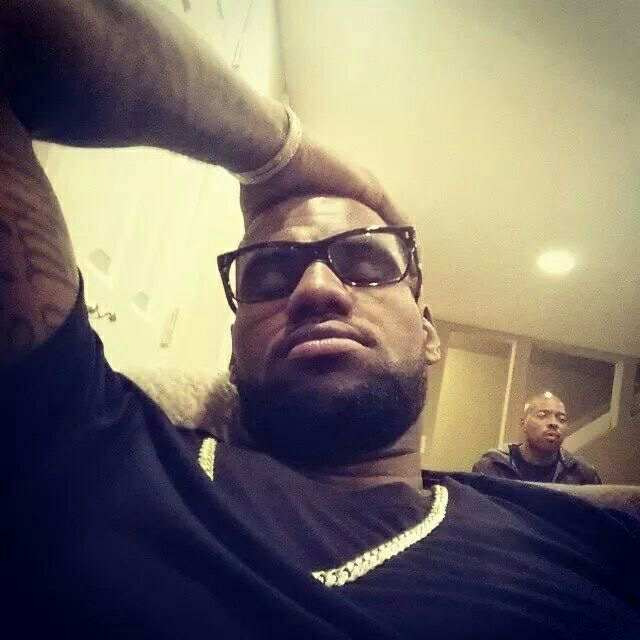

I am Niño Jay Batucan, I grew up in Caputatan, Danao City, I am currently studying at CTU DANAO CAMPUS and I am a college student. I am a student who believes in the power of knowledge, hard work and personal growth, a student who is committed to improving themselves, and understands that learning is a continuous journey.
In school I always give time to myself to study to reach my full potentials of any learnings in School. I am also approachable of any different kind of situations, I'd like to help every one of my fellow humanity and I enjoy playing my favorite sport which is called basketball and this helps me to relax and express myself.
One of my greatest strengths is my unwavering perseverance. No matter what task I take on, I am committed to seeing it through to the end. I believe in giving my best effort in everything I do, whether it's academic, personal, or professional. I don't shy away from challenges; rather, I approach them with a relentless drive and a mindset that I will overcome any obstacles in my way. It's not just about completing something—it's about pushing myself to grow and improve with every step I take.
For me, education isn’t just a requirement; it’s the cornerstone of my future. I am deeply committed to learning, not only from textbooks and lectures but also from the lessons that life offers in unexpected ways. I see every challenge as an opportunity to learn something new about the world and myself. With a clear vision of my goals, I view my educational journey as a stepping stone toward my dreams, each lesson adding to the foundation of knowledge I need to succeed.
Looking ahead, my ultimate aspiration is to become a successful Programmer. It’s a dream I hold dear because I believe that creativity, combined with hard work and consistency, can have a profound impact on others. While the path to success may not always be straightforward, I’m prepared to face setbacks with resilience and never lose sight of my ambitions. I know that achieving my dreams requires not just skill, but unshakable dedication and an enduring passion for the craft.
I view myself as a work in progress—constantly evolving and learning from both my successes and failures. I am not afraid to take risks, because I understand that growth comes from stepping outside of my comfort zone. Life, I know, will present challenges, but I am determined to face them head-on, with a spirit of perseverance and optimism. With faith in myself, the support of my family, and an unwavering belief in my potential, I am confident that I can turn my dreams into reality. Through persistence and hard work, I will make not only myself proud but also those who have supported me along the way.
My Inspiration of Basketball
My Inspiration
Lebron James

In the world of sports, athletes who stand out are not just those with exceptional skills; they are also the ones who inspire through their character, determination, and leadership.
Lebron James help reinforce his unwavering determination and drive, even at the pinnacle of his career. While he has achieved greatness, fresh inspiration can fuel his passion for growth, encourage him to overcome new challenges, and remind him of the importance of resilience in the face of adversity. LeBron’s influence extends far beyond basketball, and motivating him can empower him to continue being a powerful leader, both on the court and in his philanthropic efforts. By inspiring him, you help ensure that his legacy of excellence, perseverance, and impact on future generations remains strong.
Basketball Career:
LeBron was drafted as the #1 overall pick in the 2003 NBA Draft by the Cleveland Cavaliers. His impact was immediate, and he quickly became a generational talent. Over his career, he has played for three teams:
Cleveland Cavaliers (2003–2010)
Miami Heat (2010–2014)
Los Angeles Lakers (2018–present)
Major Achievements:
4× NBA Champion (2012, 2013, 2016, 2020)
4× NBA Most Valuable Player (MVP) (2009, 2010, 2012, 2013)
17× NBA All-Star (2005–2021)
2× Olympic Gold Medalist (2008, 2012)
NBA All-Time Leading Scorer (Currently 2nd, behind Kareem Abdul-Jabbar)
NBA Finals MVP (4 times)
LeBron has also earned numerous All-NBA selections, All-Defensive Team honors, and has set several NBA records throughout his career, particularly in scoring, assists, and versatility.
Style of Play:
LeBron is known for his basketball IQ, passing ability, versatility, and leadership. He can play and guard multiple positions on the court, making him one of the most well-rounded players in history. His combination of size, speed, and skill is unprecedented, making him a physical and mental force in the game.
Off-the-Court Influence:
Beyond his basketball career, LeBron has become a prominent figure in social justice, education, and philanthropy:
LeBron James Family Foundation (LJFF): He founded the I PROMISE School in Akron, Ohio, a public school aimed at helping at-risk children achieve their academic goals. The foundation also provides scholarships to students and families in need.
Social Justice Advocacy: LeBron is vocal about issues such as racial inequality, police violence, and systemic discrimination. He has used his platform to advocate for change, organizing initiatives like the More Than a Vote campaign during the 2020 election to increase voter turnout in Black communities.
Media Ventures: Through his company SpringHill Entertainment, LeBron has worked on multiple projects in film and television, including the production of "Space Jam: A New Legacy" (2021). He is also involved in business ventures and owns a stake in the Liverpool F.C. soccer team
Personal Life:
Family: LeBron is married to Savannah Brinson (married in 2013), and they have three children: LeBron James Jr. (Bronny), Bryce Maximus James, and Zhuri James.
Philanthropy: LeBron is dedicated to improving his hometown of Akron, particularly through educational initiatives and community support. His LeBron James Family Foundation has pledged millions of dollars to help provide better opportunities for underprivileged youth.
Business Interests:
Endorsements: LeBron has one of the most lucrative endorsement portfolios in sports, with deals from companies like Nike, Coca-Cola, PepsiCo, and AT&T. His lifetime contract with Nike is one of the largest endorsement deals in history.
SpringHill Company: LeBron co-founded this media company with Maverick Carter, focusing on creating content that promotes social justice, empowerment, and entertainment.
Legacy and Impact:
LeBron is not only a basketball icon but also a cultural figure, influencing music, fashion, and social movements. He has played a key role in reshaping how athletes use their platforms for activism, blending entertainment with social causes. His leadership, work ethic, and commitment to excellence make him a role model for young athletes and anyone striving to make a difference in the world...
LeBron’s journey from a young, single-parent household in Akron to one of the most successful and influential figures in sports history is an incredible story of perseverance, talent, and community dedication. His legacy is already cemented in the world of basketball, but his off-court contributions will likely continue to shape future generations.
His success story is not just about the accolades they have achieved; its about the legacy they are building one of hard work, determination, and a relentless pursuit of excellence. As someone who looks up to them, I hope to carry forward the lessons they have taught through their careers: to never give up, to lead with integrity, and to always play with passion.
In conclusion, Lebron James are more than just basketball players they are symbols of what it means to fight for one dreams, inspire others, and show that true leadership extends far beyond the court. They have set an example for all of us, especially for young athletes like me, who dream of making a difference through both talent and character.